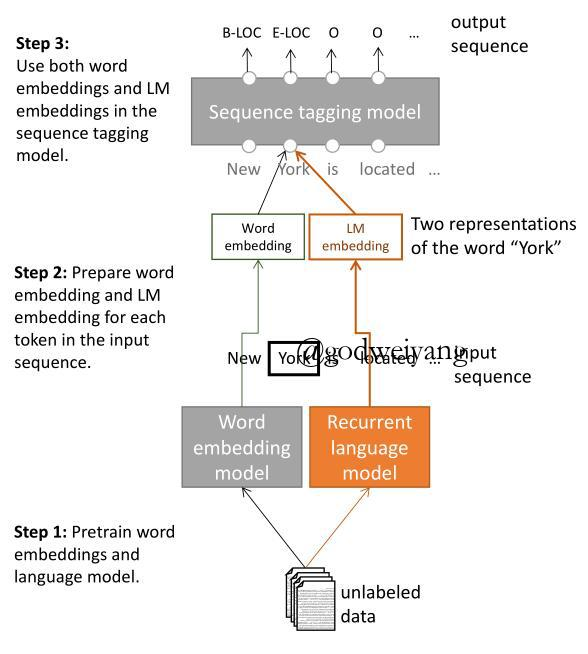
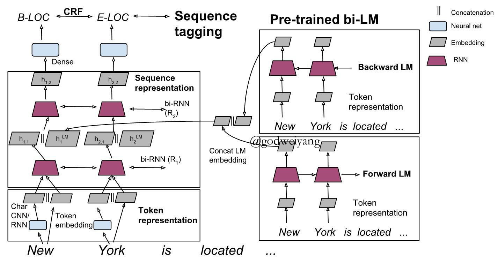
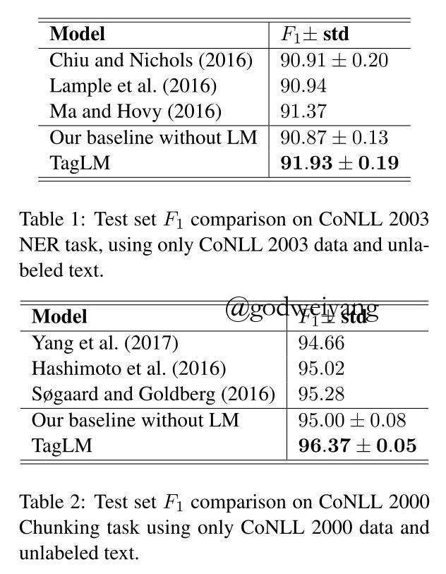
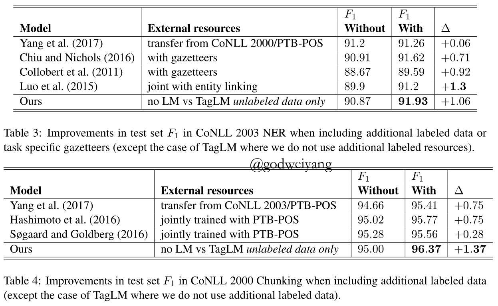
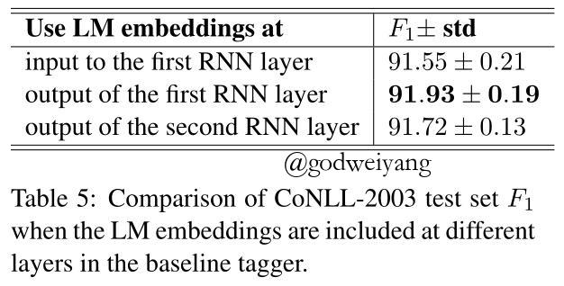
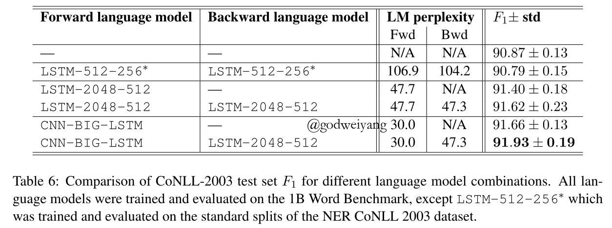

论文链接：P17-1161
摘要
从未标注文本中学习到的预训练词向量已经成为NLP任务神经网络结构的重要组成部分。
但是大多数情况下，现在的循环神经网络还是从极少的标注数据中学习上下文相关的表示。
所以这篇论文研究一种通用的半监督学习方法，将从双向语言模型中预训练出来的词向量加到NLP系统中，把它应用到序列标注任务中。
我们在两个NLP任务上做实验：NER和chunking。
1 介绍
这篇论文我们探讨一种半监督学习方法，不需要额外的标注数据。
我们使用一个神经语言模型，在大量未标注数据上训练，计算出每个位置上下文的编码，然后应用到半监督的标注模型中。
我们第一个主要贡献是证明了语言模型训练出的上下文相关表示在半监督标注模型中是很有用的。
第二个贡献是多使用一个后向的语言模型效果更好。
同时我们发现没必要针对某个领域数据来专门训练。
2 语言模型增强的序列标注
2.1 概览
这个模型的主要结构如图所示：

主要过程可以分为3步：
- 首先在大量的未标注数据上训练词向量和一个神经语言模型
- 然后提取一个句子中每个单词的词向量表示与语言模型表示
- 最后将它们应用到监督序列标注模型中。
具体的结构如下图所示：

2.2 基本的序列标注模型
我们用到的基本的序列标注模型是一个分层的神经序列标注模型，如上图左半部分所示。
给定一个句子$({t_1},{t_2}, \ldots ,{t_N})$，首先对于每个单词${t_k}$产生一个表示${x_k}$，其中${x_k}$是由这个单词基于字符的表示${c_k}$和词向量表示${w_k}$连接而成：
\[\begin{array}{l}{c_k} = C({t_k};{\theta _c})\\{w_k} = E({t_k};{\theta _w})\\{x_k} = [{c_k};{w_k}]\end{array}\]字符表示${c_k}$捕获的是这个单词的形态信息，可以用CNN或者RNN来实现。
词向量表示${w_k}$是从预训练的词向量表中直接提取的。
为了学习到上下文相关的表示，我们采用多层双向RNN。
对于每个单词${x_k}$，第${i}$层隐含层${h_{k,i}}$是由前向隐含层状态${ {\vec h}_{k,i}}$和后向隐含层状态${ {\mathord{\buildrel{\lower3pt\hbox{$\scriptscriptstyle\leftarrow$}} \over h} }_{k,i}}$连接而成。
对于第一层隐含层，${h_{k,1}}$由${x_k}$经过如下运算获得：
\[\begin{array}{l}{ {\vec h}_{k,1}} = { {\vec R}_1}({x_k},{ {\vec h}_{k - 1,1}};{\theta _{ { {\vec R}_1}}})\\{ {\mathord{\buildrel{\lower3pt\hbox{$\scriptscriptstyle\leftarrow$}} \over h} }_{k,1}} = { {\mathord{\buildrel{\lower3pt\hbox{$\scriptscriptstyle\leftarrow$}} \over R} }_1}({x_k},{ {\mathord{\buildrel{\lower3pt\hbox{$\scriptscriptstyle\leftarrow$}} \over h} }_{k + 1,1}};{\theta _{ { {\mathord{\buildrel{\lower3pt\hbox{$\scriptscriptstyle\leftarrow$}} \over R} }_1}}})\\{h_{k,1}} = [{ {\vec h}_{k,1}};{ {\mathord{\buildrel{\lower3pt\hbox{$\scriptscriptstyle\leftarrow$}} \over h} }_{k,1}}]\end{array}\]这个实验中我们使用2层隐含层，并且使用GRU或者LSTM作为双向RNN。
最后，最后一层隐含层的输出${h_{k,L}}$被输出到一个稠密层，用来预测每个标签的评分。
由于在我们的序列标注任务中，连续的标签之间是有依赖性的，所以联合起来预测一整个句子的标签比单独预测每个单词的标签更好。
因此，我们增加了额外的一层来计算相邻两个标签之间的条件随机场损失，然后用Viterbi算法来寻找概率最大的标签序列。
2.3 双向语言模型
一个语言模型是用来计算一个句子$({t_1},{t_2}, \ldots ,{t_N})$的概率：
\[p({t_1},{t_2}, \ldots ,{t_N}) = \prod\limits_{k - 1}^N {p({t_k}|{t_1},{t_2}, \ldots ,{t_{k - 1}})} \]之前的研究将每个单词的字符表示或者词向量表示送到多层LSTM中，用$({t_1},{t_2}, \ldots ,{t_k})$来求出隐含层${ {\vec h}^{LM}}_k$，这就是第$k$个单词的前向语言模型表示，同时也是语言模型LSTM层最顶端的输出。最后用softmax层来预测${t_{k + 1}}$的概率。
当然再加上一个后向语言模型表示效果就更好了：
\[p({t_1},{t_2}, \ldots ,{t_N}) = \prod\limits_{k - 1}^N {p({t_k}|{t_{k + 1}},{t_{k + 2}}, \ldots ,{t_N})} \]后向语言模型表示实现方式和前向相似，产生输出${ {\mathord{\buildrel{\lower3pt\hbox{$\scriptscriptstyle\leftarrow$}} \over h} }^{LM}}_k$
注意到在这个模型中，前向后向语言模型是独立的，不共享任何参数。
2.4 结合语言模型和序列模型
我们结合的模型TagLM是将语言模型的词表示当作额外的输入传送到序列标注模型中。
在实验中，我们发现将语言模型表示和序列模型第一层隐含层输出结合效果最好。表示如下：
\[{h_{k,1}} = [{ {\vec h}_{k,1}};{ {\mathord{\buildrel{\lower3pt\hbox{$\scriptscriptstyle\leftarrow$}} \over h} }_{k,1}};{h_k}^{LM}]\]有许多方法可以结合语言模型表示和序列模型第一层隐含层输出，比如用一个非线性函数来结合：
\[{h_{k,1}} = f([{ {\vec h}_{k,1}};{ {\mathord{\buildrel{\lower3pt\hbox{$\scriptscriptstyle\leftarrow$}} \over h} }_{k,1}};{h_k}^{LM}])\]另一种可能的方法是用类似注意力模型的机制，给每个单词的语言模型表示加上权重，然后再加进序列模型中。
本次实验中直接结合效果已经很好了，所以没有尝试其他方法。
3 实验
我们在两个NLP任务上做实验：NER和chunking，使用F1评价指标和BIOES标注体系。
我们对数据做了预处理，对所有字母小写处理，将所有数字替换成0。
CoNLL 2003 NER
CoNLL 2003 NER任务包含了路透社RCV1语料库，它是由4种不同的实体类型标注的：PER、LOC、ORG、MISC，包含了标准的训练集、验证集和测试集。
我们的序列模型的字符表示使用了80个隐含层和25维字符表示的双向GRU。上面的序列层使用了两个300个隐含层的双向GRU。为了正则化，每个GRU的输入都添加了25%的dropout。
CoNLL 2000 chunking
CoNLL 2000 chunking任务使用华尔街日报第15~18章训练，第20章测试。定义了11种句法分块类型，我们从训练集随机标记出1000个句子作为验证集。
序列模型字符表示使用了30维字符表示和带有30个宽度为3字符滤波器的CNN。上面的序列层使用了两个200个隐含层的双向GRU。每个GRU的输入都添加了50%的dropout。
预训练语言模型
我们在1B Word Benchmark上面训练语言模型，包含了8亿个单词。
我们使用两个2048个单元，512维的LSTM，在4个GPU上进行参数的同步更新，在10轮训练后就停止训练。
训练
所有的实验都采用Adam优化器在5.0处进行梯度截断。
提前结束训练来防止过拟合，采用以下方法来决定什么时候停止训练：开始时学习率设为0.001，观察验证集每一轮的性能，当验证集上的性能达到最高时，将学习率降低一个数量级，再训练5次，再降低一个数量级，再训练5次，最后停止训练。
3.1 综合系统结果
表1和表2比较的是TagLM和其他没有额外标注数据的模型结果。
表3和表4比较的是TagLM和其他包含额外标注数据的模型结果。


- 增加外部标注数据
尽管我们没有使用外部标注数据，但是我们效果依然比其他模型要好。表3和表4还可以看出这个模型加了语言模型后的提升是最大的。
3.2 分析
为了解释我们的TagLM的特性，我们在CoNLL 2003 NER上做了许多额外的实验。
怎样使用语言模型表示？
在这个实验中，我们将语言模型产生的表示连接到序列模型的不同位置：
- 连接到第一个RNN的输入层：
\[{x_k} = [{c_k};{w_k};{h_k}^{LM}]\] - 连接到第一个RNN的输出层：
\[{h_{k,1}} = [{ {\vec h}_{k,1}};{ {\mathord{\buildrel{\lower3pt\hbox{$\scriptscriptstyle\leftarrow$}} \over h} }_{k,1}};{h_k}^{LM}]\] - 连接到第二个RNN的输出层：
\[{h_{k,2}} = [{ {\vec h}_{k,2}};{ {\mathord{\buildrel{\lower3pt\hbox{$\scriptscriptstyle\leftarrow$}} \over h} }_{k,2}};{h_k}^{LM}]\]
表5显示出第二种位置是效果最好的，我们猜测原因可能是因为第二层RNN可以捕获第一层RNN产生的任务特定的上下文和语言模型产生的通用的上下文之间的互相联系。

用哪一种语言模型重要吗？
从表6可以看出，前向传播使用CNN-BIG-LSTM，后向传播使用LSTM-2048-512效果是最好的，但是我们没有测试后向也是CNN-BIG-LSTM的，那样效果估计会更好。

任务特定RNN的重要性
我们把任务特定的RNN去掉了，只用语言模型和稠密层和CRF来预测输出标签，结果非常的差。说明还是需要任务特定RNN来对标注数据编码产生必要的信息的。
数据集的大小
通过在大数据和小数据上做实验，得出如下结论：
以往的模型在小数据上从无语言模型到有语言模型提升都是很大的，但是在大数据上提升就非常的少了。
而我们的TagLM不论是小数据还是大数据性能提升都非常的大。
参数个数
由于第二层RNN的输入加入了语言模型表示，所以维数增加了，但是对实验效果几乎没有影响的。
我们通过两个实验来验证：
- 增加不包含语言模型的序列模型的第二层RNN维数。
- 减少TagLM的第二层RNN维数。
性能提升都非常的少，而且还说明了TagLM增加的参数对性能是有略微削弱的。
语言模型要跟随语料库领域而改变吗？
答案是不需要，之前都是在新闻语料上做的训练，我们直接把它应用到了科技语料库上，性能依然有很大提升。
4 相关工作
未标注数据
神经语言模型
解释RNN状态
其他序列标注模型
5 总结
- 提出了一种简单、通用的半监督方法，使用预训练的神经语言模型，来给序列标注模型增加上下文表示。
- 我们的方法在NER和chunking任务上比其他的方法都要好。
- 多使用一个后向的语言模型效果更好。
- 即使语言模型在不同领域的语料库上训练，或者序列模型在大数据量的标注数据上训练，效果依然有很大提升。